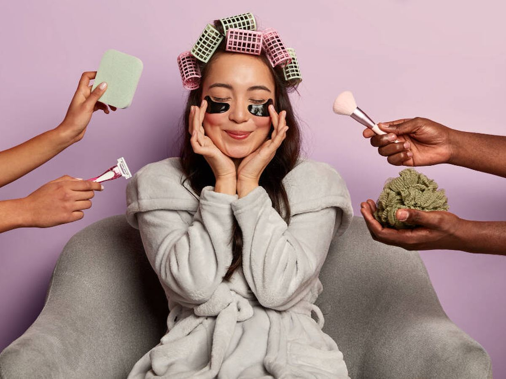

Hoy se abren las muestras gratis! (5/9/2024)
En Orchid, estamos encantados de invitarte a descubrir la magia de nuestros tratamientos de belleza con una oferta exclusiva: ¡muestras gratis de nuestros productos y servicios estrella! Sabemos que la mejor manera de conocer la calidad y eficacia de nuestros servicios es experimentarlos por ti mismo, por eso queremos ofrecerte la oportunidad de probar lo mejor que tenemos sin ningún costo.
¿Qué Podes Probar?
Estamos ofreciendo muestras gratis de una selección de nuestros servicios más populares y productos de belleza de alta gama. Desde tratamientos faciales rejuvenecedores hasta productos para el cuidado del cabello, hemos preparado una variedad de opciones para que puedas disfrutar de una experiencia de belleza completa.
¿Cómo Obtener Tu Muestra Gratis?
Visítanos en el Salón: Acércate en frente de la Torre Eiffel de Ituzaingo y menciona esta oferta especial en tu primera visita. Nuestro equipo estará encantado de ofrecerte una muestra gratuita de nuestros productos y servicios.
Cómo Limpiar Tus Pinceles de Maquillaje: Paso a Paso
Materiales Necesarios:
- Agua tibia
- Jabón suave o limpiador de pinceles (puede ser un champú suave, un limpiador específico para pinceles o incluso un poco de aceite de oliva)
- Aceite de oliva (opcional, para pinceles que usan productos a base de aceite)
- Toalla limpia
Instrucciones:
- Prepara el Área de Limpieza:
- Coloca todos tus materiales en un área de trabajo limpia. Puedes usar el lavabo, una superficie plana o una área dedicada a la limpieza de pinceles.
- Enjuaga el Pincel:
- Moja las cerdas del pincel bajo agua tibia, asegurándote de mantener el mango del pincel seco para evitar dañar el adhesivo que une las cerdas al mango.
- Aplica el Limpiador:
- Si usas un limpiador específico para pinceles, aplica una pequeña cantidad en la palma de tu mano o en un mat de limpieza. Si usas champú, aplica una pequeña cantidad en la palma de tu mano. Para productos a base de aceite, puedes usar un poco de aceite de oliva.
- Limpia el Pincel:
- Con el pincel en la palma de tu mano o en el mat de limpieza, trabaja el limpiador en las cerdas usando movimientos circulares. Asegúrate de limpiar bien entre las cerdas para eliminar todos los restos de maquillaje.
- Enjuaga Bien:
- Enjuaga el pincel bajo agua tibia, asegurándote de que todo el limpiador y el maquillaje se hayan eliminado. Evita sumergir el pincel en el agua para no dañar el adhesivo.
- Forma las Cerdas:
- Después de enjuagar, usa tus dedos para darle forma a las cerdas del pincel. Esto ayudará a mantener su forma original y evitará que se deformen.
- Seca el Pincel:
- Coloca el pincel sobre una toalla limpia y seca. Deja que se seque al aire completamente, preferiblemente en posición horizontal o colgado con las cerdas hacia abajo para evitar que el agua se filtre al mango.
- Repite Según Sea Necesario:
- Para pinceles muy sucios, puede que necesites repetir el proceso de limpieza. Asegúrate de que todos los residuos de maquillaje se hayan eliminado antes de dejar secar los pinceles.